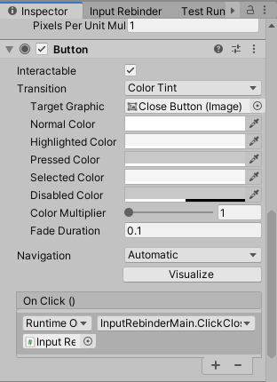

How to add functionality to the generated UI prefab?
The plugin only contains a minimal set of functions for now. You may need to implement a more complex UI for your project. Fortunately, you can do that while still benefiting from this plugin.
Localization, multilingual support
Currently, the plugin does not contain built-in support for language localization. However, you can add your language options to the plugin.
To offer translations for your action names, you need to edit the Input Rebinder Action. This class has a name in a TextMeshPro field which you can set when you swap languages. You would need to attach a new component to the root of the prefab Input Rebinder Template to keep a dictionary of translations.
To offer translations for binding names, there is currently no easy way. Since the plugin relies on Unity's input system for interactive listening, language support for device names and control names depends on Unity. I doubt there is non-English language support for bindings.
Miscellaneous game events
Your game design may involve subverting the user while they are using the UI. For example, you can trigger a game event when the user clicks the close button or any button. Usually, the game event is the sound of clicking a button.
For each button in the prefab, you can find its related game object in the hierarchy by clicking on the button in the scene view. Then you can add listeners to the click event.
